When one app invokes another, the calling app invokes an activity in the other app, rather than the app as an atomic whole. In this way, the activity serves as the entry point for an app's interaction with the user.
An activity provides the window in which the app draws its UI.
Intent filters are a very powerful feature of the Android platform. They provide the ability to launch an activity based not only on an explicit request, but also an implicit one.
Declaring the <category> element as DEFAULT enables the activity to receive launch requests.
Launch modes
singleTop
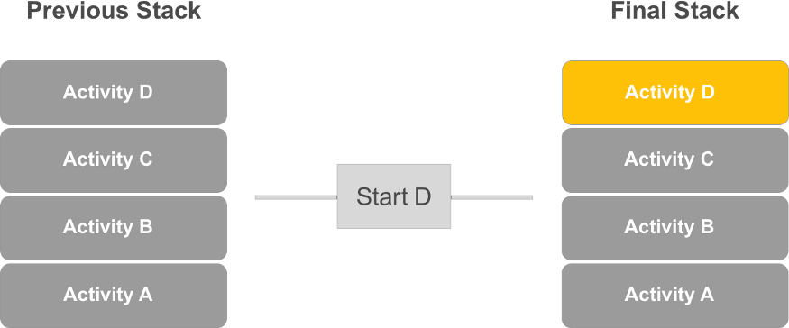
If you define Activity D as singleTop in AndroidManifest.xml. D uses same instance and onNewIntent() method is called in Activity D.
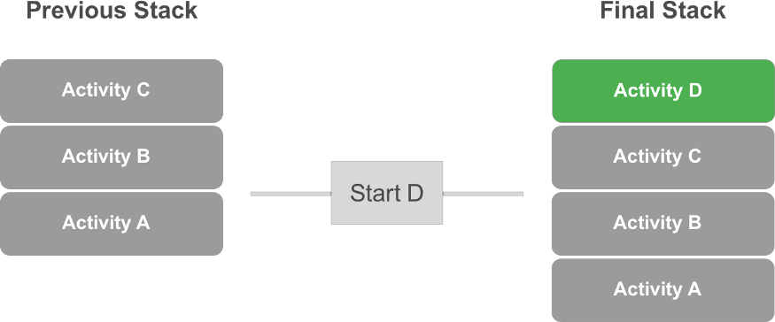
If you define Activity D as singleTop in AndroidManifest.xml. Fresh new activity is created.D.
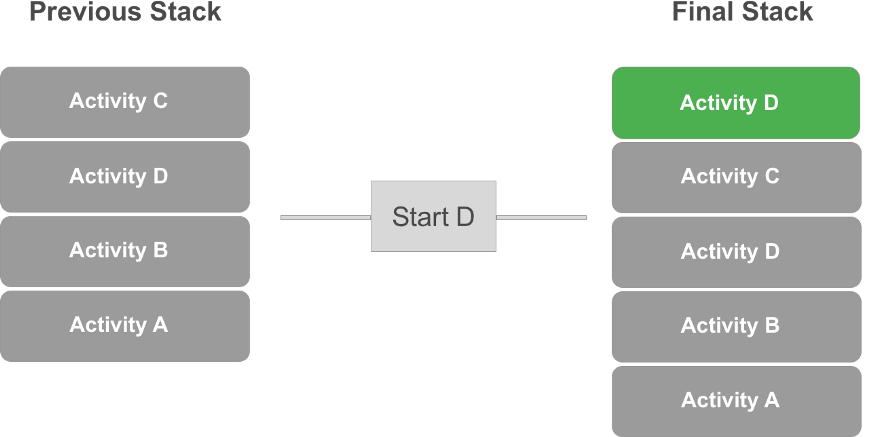
If you define Activity D as singleTop in AndroidManifest.xml. D uses same instance and onNewIntent() method if and only if it is already on top of task. If it is not on top of task, then new Activity D instance will be created.
singleTask
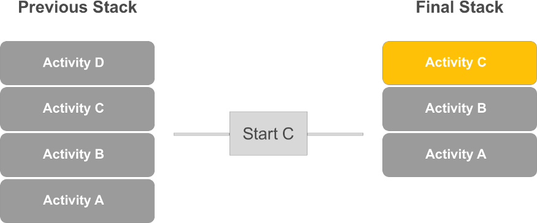
Activity C declared as singleTask. You see that Activity D is destroyed? and onNewIntent() method is used in Activity C.
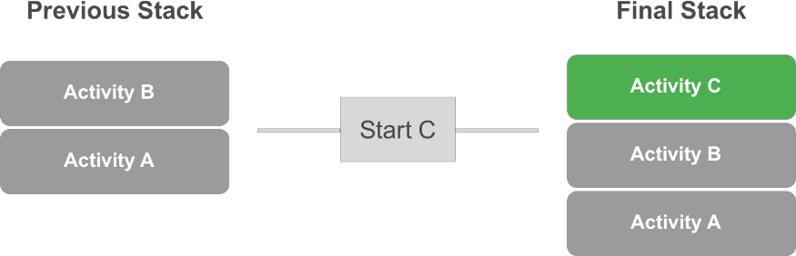
Fresh new Activity C is launched.
singleInstance
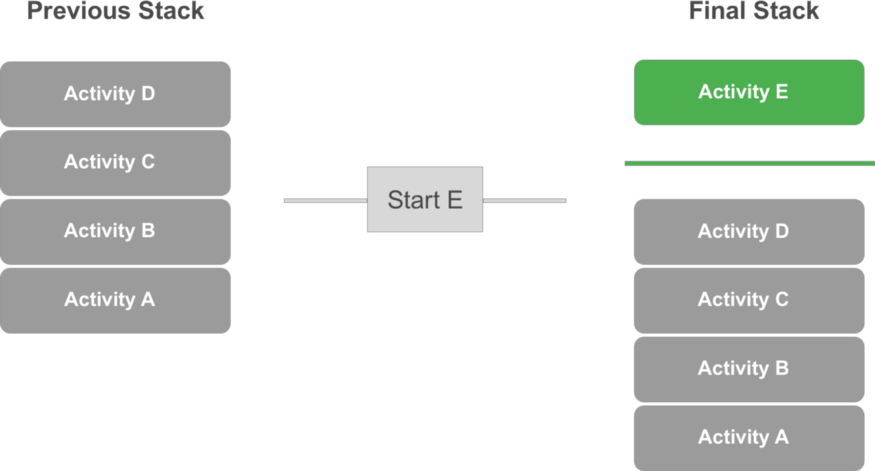
launchMode = “singleInstance” in Activity E. Woaw!? yes. A,B,C,D is in one task. E will be created in another task.
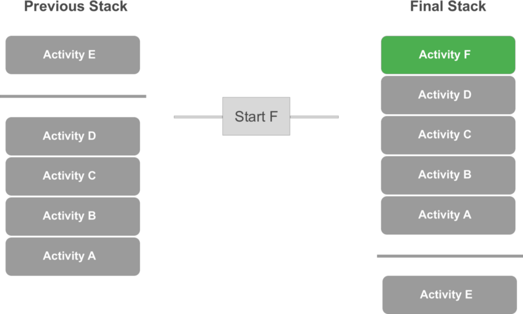
What if we want to launch Activity F from Activity D? E is still in another task. a,b,c,d and f are in another task.
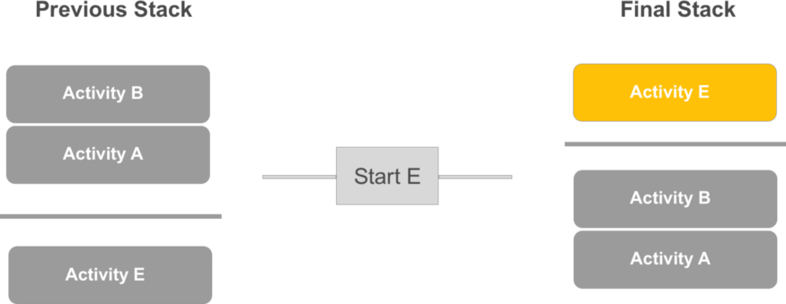
Activity E is still in another task. And If we start it again, onNewIntent() method is called instead of creating new fresh activity.
standard
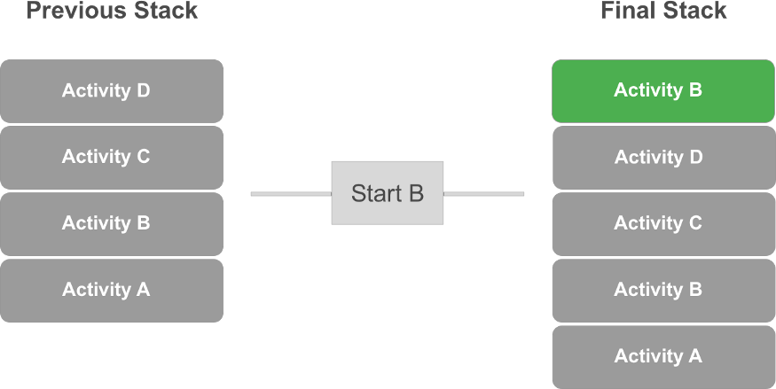
Creates fresh new activity B. And yes I know we already have one B in stack. But It does not use that one.
Activity Lifecycle
Single Activity — Scenario 1: App is finished and restarted
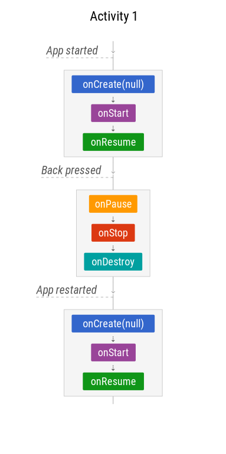
Single Activity — Scenario 2: User navigates away
-The user presses the Home button
-The user switches to another app
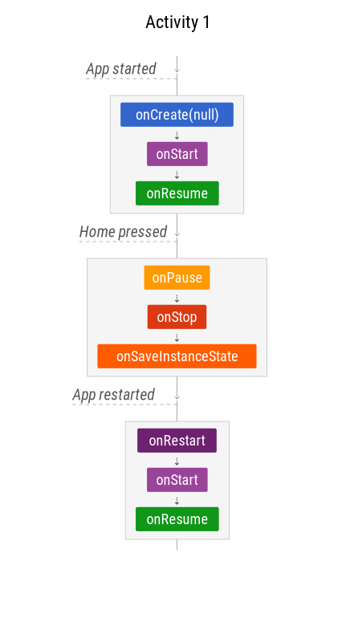
the system uses onSaveInstanceState to save the app state in case the system kills the app’s process later on
Single Activity — Scenario 3: Configuration changes
-Configuration changes, like a rotation
-User resizes the window in multi-window mode
The activity is completely destroyed, but the state is saved and restored for the new instance.
Single Activity — Scenario 4: App is paused by the system
-Enabling Multi-window mode (API 24+) and losing the focus
-Another app partially covers the running app (a purchase dialog, a runtime permission dialog, a third-party login dialog…)
-An intent chooser appears, such as a share dialog
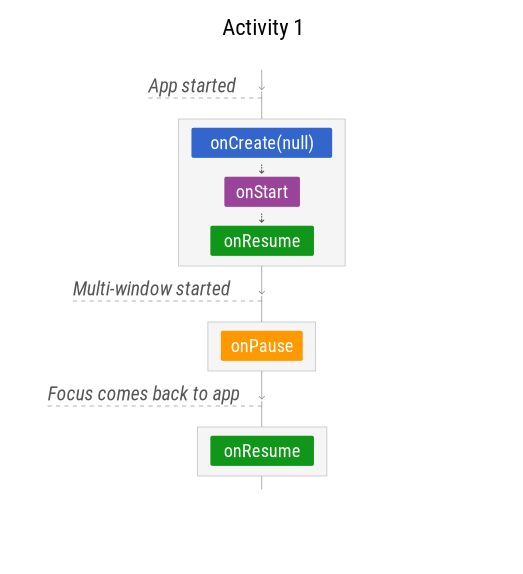
Back Stack — Scenario 1: Navigating between activities
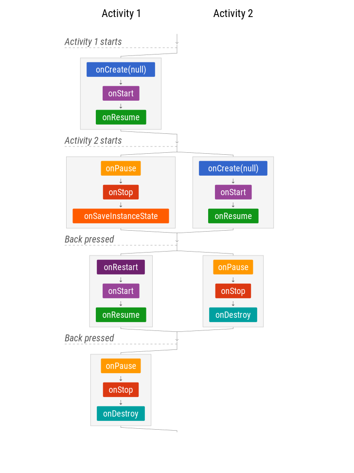
Note that onSaveInstanceState is called, but onRestoreInstanceState is not. If there is a configuration change when the second activity is active, the first activity will be destroyed and recreated only when it’s back in focus. That’s why saving an instance of the state is important.
Back Stack — Scenario 2: Activities in the back stack with configuration changes
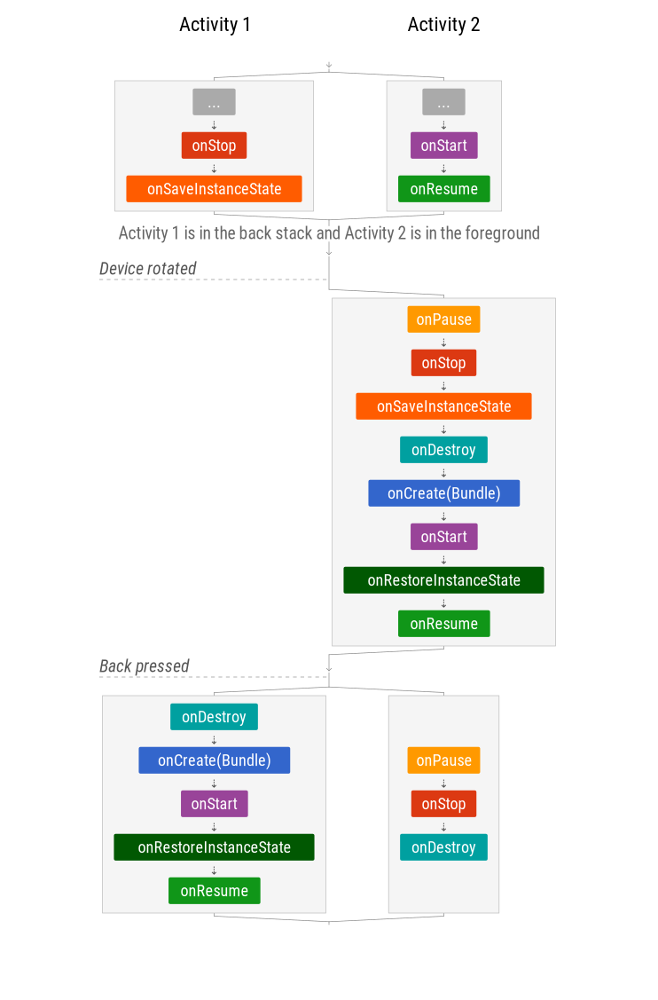
Back Stack — Scenario 3: App’s process is killed
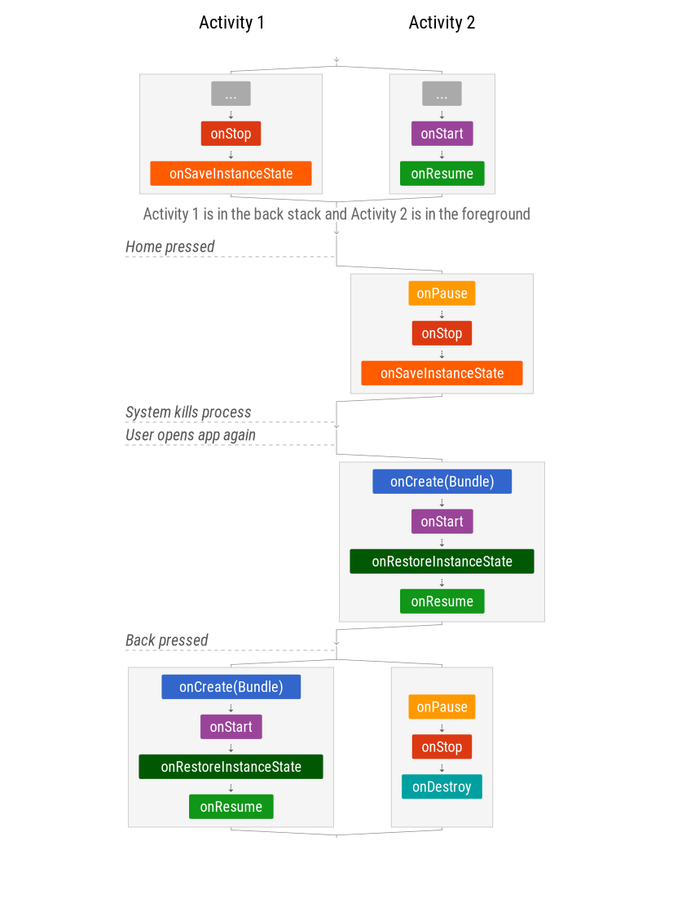
Scenario 1: Activity with Fragment starts and finishes
It’s guaranteed that the Activity’s onCreate is executed before the Fragment’s. However, callbacks shown side by side — such as onStart and onResume — are executed in parallel and can therefore be called in either order.
Scenario 2: Activity with Fragment is rotated
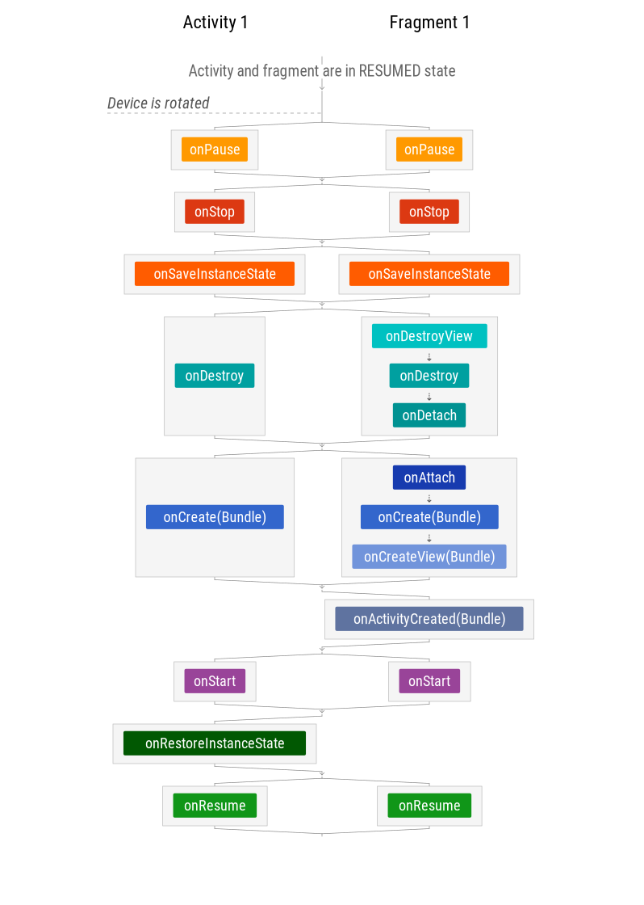
There’s no onRestoreInstanceState in fragments, but the Bundle is available in the fragment’s onCreate, onCreateView and onActivityCreated.
Fragments — Scenario 3: Activity with retained Fragment is rotated
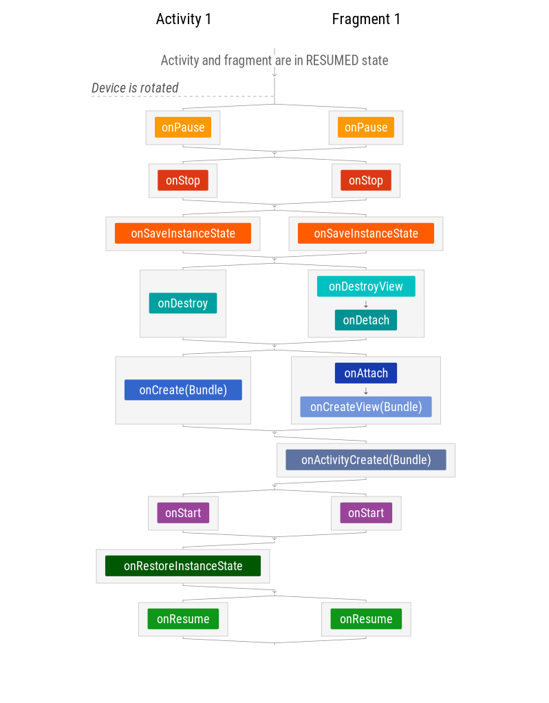
Translucent activities have translucent (usually transparent) backgrounds so the user can still see what’s underneath.
When the property android:windowIsTranslucent is applied to an activity’s theme, the diagram changes slightly: the background activity is never stopped, only paused, so it can continue receiving UI updates
Why use fragments?
Fragments group user interface components and their associated logic.
Fragments provide glue and coordination of components, driven by knowledge of external lifecycle. Fragments can depend on Views. But Views have no knowledge of Fragments.
Don’t use a Fragment if a Composite View does the same job, especially if you don’t need any lifecycle callbacks (e.g. that UI doesn’t need to know when the app is paused). On the other hand don’t do stuff like binding to a service inside composite views (ViewGroups), listening to broadcasts, and other things where you are bringing external dependencies into your custom view. This is again better suited for Fragments.
Fragments provide you with a backstack, state restoration (remember that dreaded process death?), transitions, animations, options to detach/re-attach views, the whole lifecycle awareness and much more.
Retained fragments? Have you ever wondered what mechanism ViewModel uses to survive orientation change? They’re kept inside headless retained Fragments during the orientation change. Pretty neat. But for the love of God, don’t use Retained Fragments in regular screens. They’re not really meant to be used with an actual UI.
Process death
Your Android application (process) can be killed at any time if it’s in paused or stopped state. The state of your Activities, Fragments and Views will be saved. When your return back to the application — the system will start the process again, recreate the top activity (the Activities in the back-stack will be recreated on demand when you go back) and you will get a Bundle with the stored state.
Troublemakers in your app:
Singletons
Any other shared instances that keep mutable data (such as injected dependencies where you keep some state)
Data and State stored in your Application class
Mutable static fields
Retained fragments (state is restored, data is lost)
Basically anything which is not stored in onSaveInstanceState and you depend on it